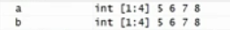
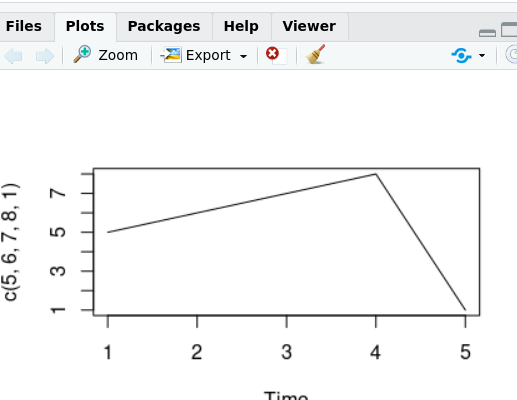
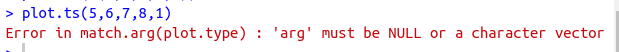

Concatenation
At the very primitive level
a = 5 : 8 [Eq 1]
b = c(5 : 8) [Eq 2]

both the eq1 and eq2 are same. But when we move forward things change
Let's take example of plot.ts()
Now what plot.ts does is it creates a time series graph for the observed values (let say observer values are 5,6,7,8,1). Now to feed all these observation in to the fuction we need to use c() so that plot.ts can understand it as vector of numbers.
plot.ts(c(5,6,7,8,1))

But in this case if we ommited the concatenation then it would have been error
plot.ts(5,6,7,8,1)
